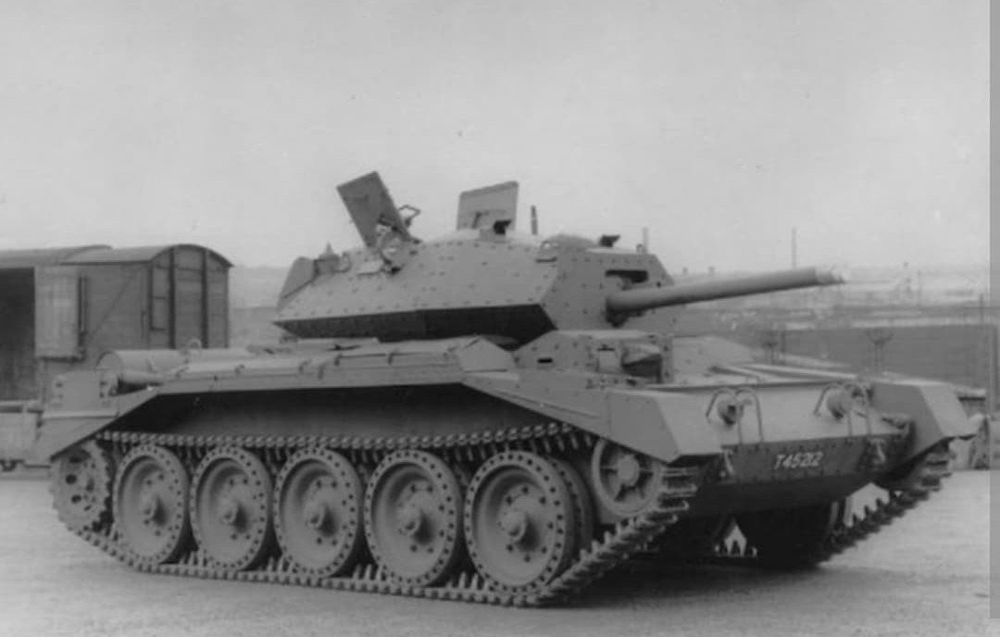
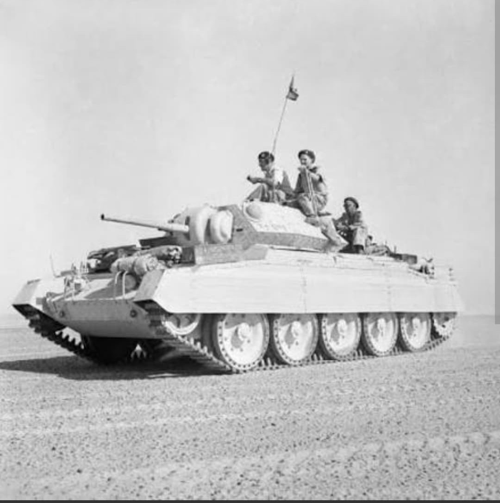
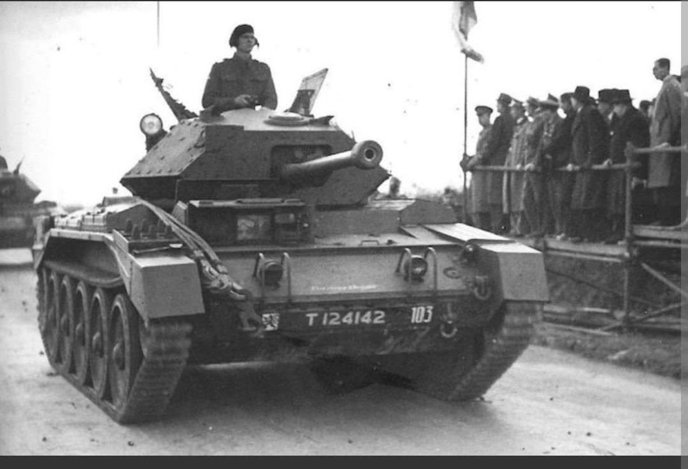

La monture rapide des Rats du Désert lors des batailles décisives d'Afrique du Nord

Le **Crusader** (officiellement Cruiser Tank Mk VI, A15) est l'un des chars de croisière britanniques les plus emblématiques de la Seconde Guerre mondiale.
Conçu selon la doctrine britannique privilégiant la vitesse et la mobilité pour effectuer des percées et contourner les lignes ennemies, le Crusader fut la cheville ouvrière des divisions blindées britanniques lors des combats acharnés en Afrique du Nord.
Développé par la firme **Nuffield Mechanisation and Aero**, le Crusader pesait environ **19 à 20 tonnes**. Il reprenait une suspension Christie performante couplée à un puissant moteur Nuffield Liberty V12 de 340 chevaux, lui permettant d'atteindre une vitesse de pointe de **42 km/h sur route** (et très rapide en terrain désertique).
Son blindage initial de **40 à 51 mm** (porté à 64 mm sur le Mk III) le rendait relativement vulnérable face aux canons antichars lourds. Armé initialement du canon **QF 2-pounder (40 mm)** avec une tourelle auxiliaire de mitrailleuse avant (rapidement supprimée), il fut réarmé dans sa version Mk III du canon plus efficace **QF 6-pounder (57 mm)**.

Le Crusader effectua ses débuts au combat lors de l'**Opération Battleaxe** en juin 1941, puis joua un rôle déterminant lors de l'**Opération Crusader** qui permit de lever le siège de Tobrouk.
Symbole de la 7e Division Blindée (les célèbres *Rats du Désert*), il affronta sans relâche les Panzer III et IV du *Afrika Korps* d'Rommel. Bien que pénalisé à ses débuts par des problèmes de fiabilité mécanique dus à la poussière du désert et à un refroidissement insuffisant, ses qualités de vitesse et de manœuvrabilité en firent un adversaire redouté en tactique de contournement.

Produit à plus de **5 300 exemplaires** entre 1940 et 1943, le Crusader fut progressivement remplacé sur la ligne de front par les chars américains M4 Sherman et les nouveaux chars de croisière Cromwell.
Cependant, son châssis continua de rendre d'immenses services jusqu'à la fin de la guerre sous forme de variantes spécialisées : blindés d'imitation, véhicules de dépannage, tracteurs d'artillerie et surtout le **Crusader AA** (armé de canons antiaériens de 20 mm Oerlikon ou 40 mm Bofors) assurant la protection rapprochée des colonnes alliées en Normandie.
Page du Musée HOP WW2 – Section Véhicules Terrestres Britanniques